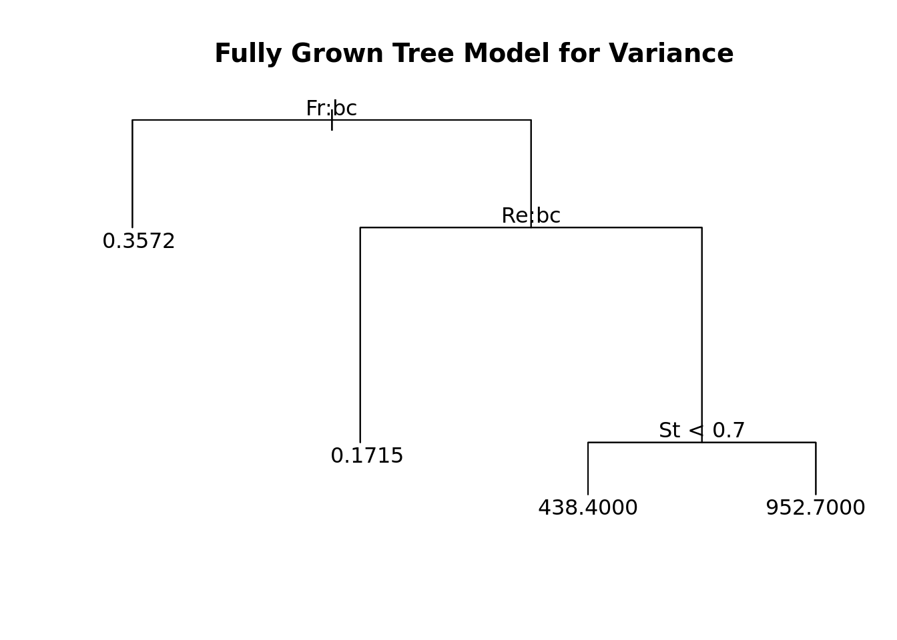
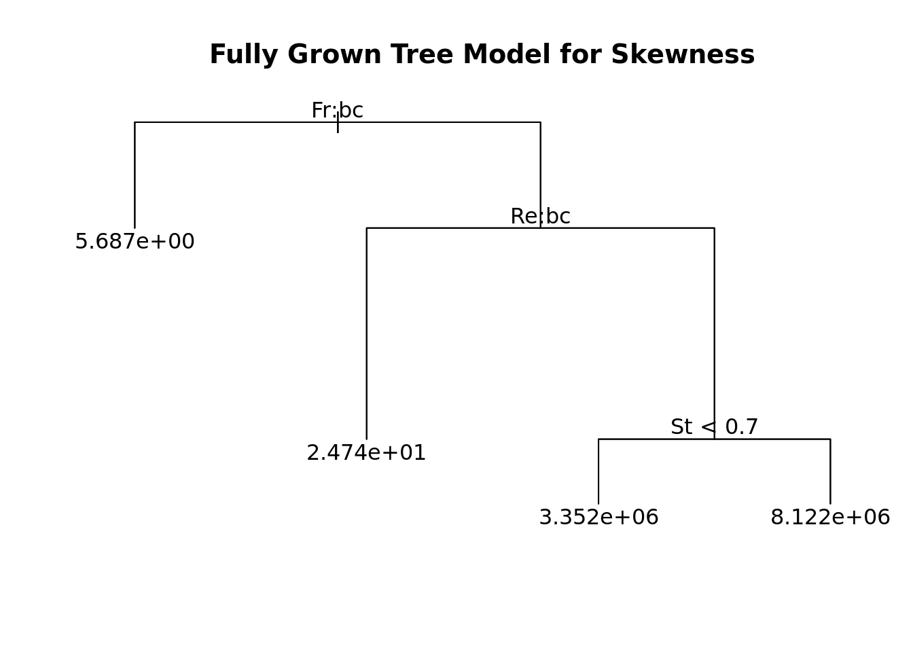
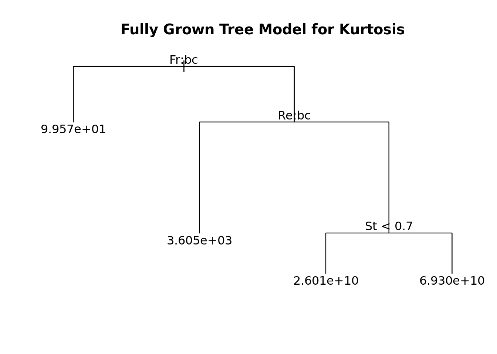

STA325 Case Study
Introduction
Nobel Prize winning Physicist Richard Feynman said that turbulence was “the most important unsolved problem of classical physics”. Although, we still unexpectedly feel bumps on airplanes and have trouble truly predicting where a Hurricane will strike land, we hope to add to the field of research studying how to model turbulent systems. We position our research in two key areas:
- Prediction
- Statistical Inference
Prediction is important in the context of this problem as data from turbulent systems is very computationally expensive to obtain. Therefore, experiments using data on the evolution turbulent systems need better, quicker, cheaper methods to get data.
Statistical Inference is also important as it can help elucidate the connections between turbulence and initial settings. We hope to build a model that gives clarity on this as well.
Methodology
We are given 112 data points, but we only use 89 data points for training our model as to not overfit our model. We will examine numerous different types of models including:
- A Simple Linear Regression Model
- More Complex Non-Linear Regression Model
- Tree Based Model
- Boosted Tree Model
In addition to our splitting of data for training and testing, we further split our training data where 66 data points are used for training and 23 data points are used for selecting our best model. When fitting the models mentioned above, we benchmark their predictive performance on the validation set.
While cross-validation is a common technique to estimate the true test-error, we believe that it would be too computationally expensive to fit many different folds of all of the models we wish to predict. This is a shortcoming, and provides for future investigation.
The data has 4 response variables and 3 input variables. Each output variable is a raw moment of a final turbulent distribution. We’ve converted the raw moments to central moments so as for better interpretability. We keep the first raw moment, however, as the first central moment is 0.
As there are only three input variables, we will stray away from methods which penalize models with high numbers of correlated predictors i.e. (lasso/ridge regression). Our model is already sparse so there is there is no need to make it more sparse and there is low risk that the predictors are highly correlated.
Quick Transformations for our Input Variables
| Reynolds Number | Count | Froude Number | Count |
|---|---|---|---|
| 90 | 27 | 0.052 | 23 |
| 224 | 26 | 0.300 | 20 |
| 398 | 13 | Inf | 23 |
Reynolds and Froude numbers are non-continuous as there is only three buckets for the numbers. Therefore, we are going to make them a categorical variable to help interpretability.
Simple Linear Regression Benchmark
| Mean | Variance | Skewness | Kurtosis |
|---|---|---|---|
| 0.0002482 | 33003.25 | 2.128693e+12 | 1.537524e+20 |
It is clear looking at the MSEs of the moment that the using a Simple Linear Regression model to predict anything but the mean is not a good idea as the performance is not good, with increasingly high MSEs for each moment. Nonetheless, it serves as a good baseline for assessing further complex models.
Polynomials
We conducted cross-validation to determine the best fitting degree-polynomial for Stokes number. Our chosen polynomial models will include some degree polynomial of Stokes number, while adding Froude and Reynolds number as well. Since these variables are factors, we cannot make them polynomials, however, we still include these variables in our model since we decided against sparse models since we only start with three predictors, and all three predictors have a significant effect on the first four moments of particle cluster volume.
The optimal degree polynomials for predicting mean, variance, skew, and kurtosis are all 2 for Stokes Number.
Using 2nd degree polynomial models while also predicting the moments with Froude and Reynolds numbers, we get lower MSEs for all four moments, however these MSEs are still relatively high, indicating that using polynomials would also not be the best way of predicting the moments.
Interaction Effects
We check to see if there are significant interaction effects between the three predictors, and then construct a model with these interaction effects. We expect there to be significant interaction effects between the three predictors due to the similarity between the three numbers. For example, we expect Reynolds number (fluid turbulence) to have some relationship with Frouds number (gravitational acceleration).
Trees
Finally, we construct a tree-based model and a boosted model.




We tested whether pruning our tree would help predictive performance, but found that it did not. Therefore, we left all our trees as fully grown trees shown above.
Boosting
Results: Evaluating Our Model & Investigating Relationsips
| ModelType | MSE |
|---|---|
| Linear Regression | 0.000248 |
| 2nd Degree Polynomial | 0.000253 |
| Interaction Effects | 0.000030 |
| Tree Based Model | 0.000014 |
| Boosted Model | 0.000163 |
| ModelType | MSE |
|---|---|
| Linear Regression | 33003.25 |
| 2nd Degree Polynomial | 35219.99 |
| Interaction Effects | 9020.97 |
| Tree Based Model | 2297.68 |
| Boosted Model | 19311.89 |
| ModelType | MSE |
|---|---|
| Linear Regression | 2.128693e+12 |
| 2nd Degree Polynomial | 2.390292e+12 |
| Interaction Effects | 7.797398e+11 |
| Tree Based Model | 2.296011e+11 |
| Boosted Model | 1.596803e+12 |
| ModelType | MSE |
|---|---|
| Linear Regression | 1.537524e+20 |
| 2nd Degree Polynomial | 1.644865e+20 |
| Interaction Effects | 6.510998e+19 |
| Tree Based Model | 2.237499e+19 |
| Boosted Model | 1.106086e+20 |
[1] "Tree Based Model" "Tree Based Model" "Tree Based Model" "Tree Based Model"Our final results of the MSE for each model for all of the four moments leads us to selecting the tree-based model. This is the model that has the lowest MSE for mean, variance, skew, and kurtosis. The tree-based model makes for interpretable model for a tricky set of data which included only one quantitative predictor (Stokes number) and two factor variables (Reynolds number and Frouds number). While the data supports us using a tree-based model, we understand that there comes some uncertainty with this model selection. We randomly sampled a validation set to test our error and if we sampled a different batch of data, a different model may have predicted better.
Conclusion
Investigating Relationships
| Estimate | Std. Error | t value | Pr(>|t|) | |
|---|---|---|---|---|
| (Intercept) | 0.1045852 | 0.0047114 | 22.198205 | 0.0000000 |
| St | 0.0162280 | 0.0024638 | 6.586698 | 0.0000000 |
| ReMedium | -0.1085693 | 0.0044004 | -24.672325 | 0.0000000 |
| ReHigh | -0.1069065 | 0.0057140 | -18.709533 | 0.0000000 |
| FrMedium | -0.0100684 | 0.0050697 | -1.985998 | 0.0516079 |
| FrInfinity | -0.0134807 | 0.0047274 | -2.851604 | 0.0059571 |
| Estimate | Std. Error | t value | Pr(>|t|) | |
|---|---|---|---|---|
| (Intercept) | 397.65436 | 62.67941 | 6.344258 | 0.0000000 |
| St | 56.96925 | 32.77714 | 1.738079 | 0.0873270 |
| ReMedium | -231.42216 | 58.54224 | -3.953080 | 0.0002061 |
| ReHigh | -288.43506 | 76.01755 | -3.794322 | 0.0003468 |
| FrMedium | -332.97442 | 67.44543 | -4.936945 | 0.0000067 |
| FrInfinity | -267.52677 | 62.89184 | -4.253760 | 0.0000748 |
| Estimate | Std. Error | t value | Pr(>|t|) | |
|---|---|---|---|---|
| (Intercept) | 3220094.7 | 533351.8 | 6.037468 | 0.0000001 |
| St | 528559.1 | 278907.4 | 1.895106 | 0.0628992 |
| ReMedium | -1906707.5 | 498147.8 | -3.827594 | 0.0003112 |
| ReHigh | -2355239.4 | 646848.8 | -3.641097 | 0.0005672 |
| FrMedium | -2745078.3 | 573906.9 | -4.783142 | 0.0000116 |
| FrInfinity | -2206451.9 | 535159.5 | -4.122980 | 0.0001167 |
| Estimate | Std. Error | t value | Pr(>|t|) | |
|---|---|---|---|---|
| (Intercept) | 26325470358 | 4535742950 | 5.804004 | 0.0000003 |
| St | 4828236326 | 2371890599 | 2.035607 | 0.0462131 |
| ReMedium | -15851044054 | 4236359847 | -3.741666 | 0.0004112 |
| ReHigh | -19414518255 | 5500946304 | -3.529305 | 0.0008067 |
| FrMedium | -22769502054 | 4880632391 | -4.665277 | 0.0000177 |
| FrInfinity | -18318122300 | 4551115278 | -4.024974 | 0.0001622 |
For each response variable, the input variables have a different effect. For the:
Mean
Variance
Skewness
Kurtosis